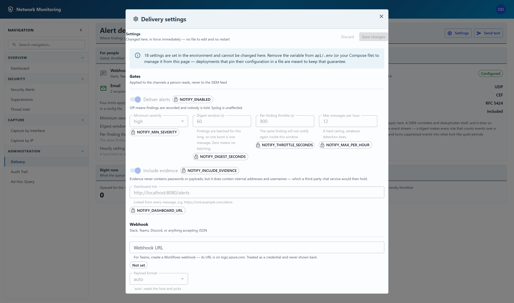

Delivery settings
Changed here, in force immediately — no file to edit and no restart.
Open them from the gear in the header — Administration settings → Delivery settings.
These used to be a Settings button on the Alert delivery page. They are under the gear now, so there is one place to change delivery rather than two. That page keeps what nothing else has: whether delivery is actually working, and the test send.

Three rules that apply to every field
- A saved change is in force at once. Nothing here needs a restart, which is the whole reason the page exists.
- Only what you changed is sent. Saving cannot quietly rewrite a field you did not touch.
- A secret is never displayed, only replaced. The application reports whether one is set — Configured or Not set — and never the value. Leave a secret box empty to keep what is stored; type into it to replace it; use Clear to remove it.
Fields pinned by the server
Some fields appear greyed out with a padlocked label such as
SMTP_PORT beside them, and a banner at the top says how many. Those are set
in the server's environment — in api/.env or a Compose file — and
the application refuses to let a web form contradict a file that the next redeploy would
restore.
To manage such a field from this page, remove the variable from that file and restart. The setting keeps its current value; it simply becomes editable.
A pinned field is shown disabled rather than editable-and-ignored on purpose. A control that accepts an edit and changes nothing is the failure this design exists to avoid — the conclusion drawn is the settings page is broken, not that field is managed elsewhere.
The groups
Gates
Deliver alerts is the master switch for the channels people read; syslog ignores it by design. The rest are the four limits described on Alert delivery, plus Include evidence and a Dashboard link that every message links back to.
Include evidence is a separate decision from delivery itself. Evidence never contains passwords or payloads, but it does contain internal addresses, MAC addresses and usernames — and sending those to a third-party chat service moves them outside the network you are protecting. Turn it off and the message titles still say what happened.
Webhook
One URL, for Slack, Teams, Discord or anything that accepts JSON.
Payload format is normally left at auto,
which reads the host and picks the right shape. For Teams, create a
Workflows webhook — its URL is on logic.azure.com; the
retired Office 365 connector format is still produced for an older
webhook.office.com URL.
The webhook URL is treated as a credential, because for Slack and Teams that URL is the credential.
An SMTP host, a sender, and one recipient per line. Which host actually works is worth reading before you fill this in:
- An internal relay — most organisations running a monitoring tool already have one, it needs no credentials, and it is the right answer for an on-premises sensor. Set the host and leave Username empty.
- An app password, where your tenant still permits one.
- OAuth2, for a tenant that permits nothing else — see Email over OAuth2.
- Your company mailbox with an ordinary password usually fails. Microsoft 365 and Google disable basic SMTP authentication by default, so a correct password is rejected exactly like a wrong one.
Implicit TLS belongs on only for port 465. On 587 it must be off — the server expects STARTTLS there, and a client that opens TLS immediately hangs until the socket times out. The page warns you if the two contradict each other.
Syslog / SIEM
A collector host and port, the wire format (CEF or JSON) and the framing (RFC 5424 or 3164 — prefer 5424, since 3164 has no year and no timezone in its timestamp). Include evidence is on by default here, unlike the chat channels: the disclosure argument does not apply to a collector inside your own network.
Any signed-in account can open this dialog and read every non-secret value, which is what makes the page useful when an alert did not arrive. Saving a change requires an administrator. Secrets are never returned to any account, at any role.